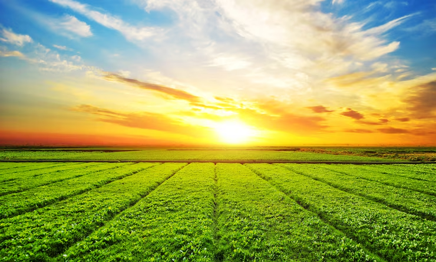
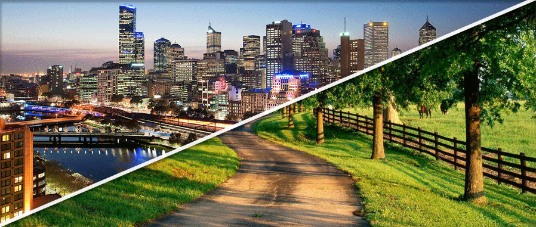
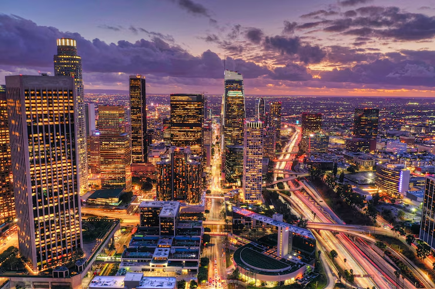

Objetivo do Projeto
Inglobar as zonas rurais e urbanas de forma coordenada e organizada, fortalecendo a economia local, melhorando e expandindo o acesso a serviços e promovendo sustentabilidade para todos, melhorando o meio ambiente.
Planejamento Estratégico
- Investir em infraestrutura no campo e cidade.
- Centros de distribuição estratégicos.
- Promover a cultura de ambas as regiões.
- Educação e suporte técnico ao produtor.
Fluxos e Atores Envolvidos
Produtores, transportadoras, centros de distribuição, comerciantes e consumidores formam uma cadeia integrada, de maneira que impulsiona e movimenta a economia, garantindo uma alimentação de qualidade de forma sustentavel e equilibrada.
Galeria de Imagens



Conclusão
O projeto alcança seu objetivo ao garantir que as ações entre campo e cidade estejam juntas e interligadas, promovendo o desenvolvimento sustentável.